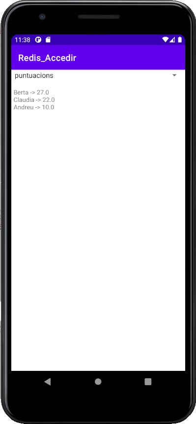

5.1 - Redis
Guardar dades en un servidor extern Redis no ofereix cap dificultat.
Evidentment no ens podem plantejar el fet d'instal·lar el servidor en el dispositiu mòbil, per les restriccions d'espai. Per tant la connexió serà externa a un servidor. Però si tenim permisos, amb una contrasenya per a poder autenticar no hi haurà problema.
Podrem instal·lar el mateix driver que hem utilitzar en Eclipse: Jedis. Només haurem d'incorporar-lo al projecte com una llibreria.
Tindrem el mateix inconvenient que en ocasions anteriors: com que anem a accedir al servidor extern a través d'Internet, no podrem fer aquest accés des del thread principal. La solució més elegant seria utilitzar corutines, però nosaltres anem a simplificar per a poder posar l'accent sobre el que ens interessa, que és accedir a les dades. Ho muntarem com en altres ocasions de la manera més senzilla: accedint a la Base de Dades des d'un altre thread, i unint al principal quan s'haja accedit.
Anem a fer el mateix exercici que en Eclipse, el de mostrar totes les claus en un Spinner, i després en seleccionar una clau del Spinner, mostrar el seu contingut, adaptant-lo per als diferents tipus de claus que tenim en Redis.
- Creeu un nou projecte d'Android, que el podeu anomenar per exemple Redis_Accedir
- Incorporeu el driver de redis jedis-3.5.0.jar. El millor seria incorporar-lo en la vista de Project en app -> libs, i després apratar damunt amb el botó de la dreta i triar Add as library
- Doneu el permís d'accedir a Internet. En el AndroidManifest.xml, afegiu la següent línia, dins de manifest però fora de application:
<uses-permission android:name="android.permission.INTERNET" />- Creeu el següent activity_main.xml, on tindrem un Spinner i un TextView
<?xml version="1.0" encoding="utf-8"?>
<androidx.constraintlayout.widget.ConstraintLayout xmlns:android="http://schemas.android.com/apk/res/android"
xmlns:app="http://schemas.android.com/apk/res-auto"
xmlns:tools="http://schemas.android.com/tools"
android:layout_width="match_parent"
android:layout_height="match_parent"
tools:context=".MainActivity">
<Spinner
android:id="@+id/spinner"
android:layout_width="match_parent"
android:layout_height="wrap_content"
app:layout_constraintStart_toStartOf="parent"
app:layout_constraintTop_toTopOf="parent" />
<TextView
android:id="@+id/area"
android:layout_width="382dp"
android:layout_height="622dp"
android:text="TextView"
app:layout_constraintBottom_toBottomOf="parent"
app:layout_constraintEnd_toEndOf="parent"
app:layout_constraintStart_toStartOf="parent"
app:layout_constraintTop_toBottomOf="@+id/spinner" />
</androidx.constraintlayout.widget.ConstraintLayout>
- Creeu el següent programa principal:
import androidx.appcompat.app.AppCompatActivity
import android.os.Bundle
import android.view.View
import android.widget.AdapterView
import android.widget.ArrayAdapter
import kotlinx.android.synthetic.main.activity_main.*
import redis.clients.jedis.Jedis
class MainActivity : AppCompatActivity() {
internal var claus: List<String>? = null
val con = Jedis("89.36.214.106")
private var sqlThread: Thread = object : Thread() {
override fun run() {
con.connect()
con.auth("ieselcaminas.ad")
claus = con.keys("*").sorted()
//con.close()
}
}
override fun onCreate(savedInstanceState: Bundle?) {
super.onCreate(savedInstanceState)
setContentView(R.layout.activity_main)
// Des de la versió 3 d'Android, no es permet obrir una connexió des del thread principal.
// Per tant s'ha de crear un nou.
sqlThread.start()
// i ara esperem a que finalitze el thread fill unint-lo (join)
try {
sqlThread.join()
} catch (e: InterruptedException) {
e.printStackTrace()
}
val adapter = ArrayAdapter(this, android.R.layout.simple_spinner_item, claus!!)
spinner.adapter = adapter
spinner.onItemSelectedListener = object : AdapterView.OnItemSelectedListener {
override fun onNothingSelected(parent: AdapterView<*>?) {
TODO("Not yet implemented")
}
override fun onItemSelected(parent: AdapterView<*>?, view: View?, position: Int, id: Long) {
var altreThread: Thread = object : Thread() {
override fun run() {
area.setText("")
val clau = claus?.get(position)
val tip = con.type(clau)
when (tip){
"string" -> area.setText(con.get(clau))
"hash" -> {
for (camp in con.hkeys(clau))
area.append(camp + " -> " + con.hget(clau,camp) + "\n")
}
"list" -> {
for (e in con.lrange(clau,0,-1))
area.append(e + "\n")
}
"set" -> {
for (e in con.smembers(clau))
area.append(e + "\n")
}
"zset" -> {
for (e in con.zrevrangeWithScores(clau,0,-1))
area.append(e.element + " -> " + e.score + "\n")
}
}
}
}
altreThread.start()
altreThread.join() //per senzillesa, no tractem l'excepció
}
}
}
}
Observeu com tant en el moment d'agafar totes les claus, com en el moment d'agafar el contingut de la clau triada, hem muntat un thread, per a no fer-lo des del principal.
Aquest seria el resultat:

Llicenciat sota la Llicència Creative Commons Reconeixement NoComercial CompartirIgual 2.5